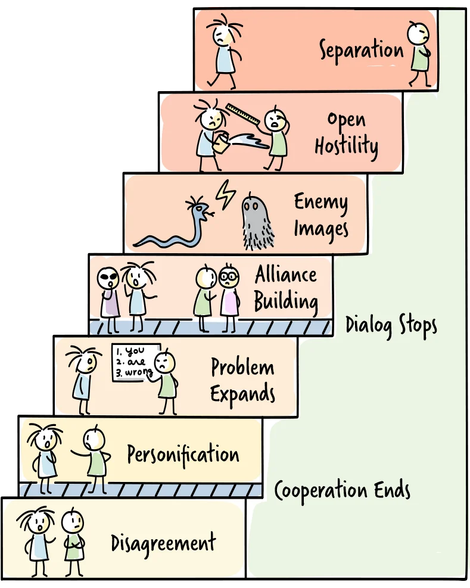

What this resource is for
In AI-accelerated organisations, the pace of individual and team output increases, and so does the surface area for friction. More work in motion means more dependencies, more decisions, and more opportunities for misalignment between people and teams. Not all of that friction is conflict, but some of it is, and knowing the difference matters.
Conflicts are a natural and normal part of everyday life. They form in close relationships, in workplaces, communities, and even on an international level. As inevitable as they are, the outcome does not have to be negative. Conflicts can challenge us to think harder, be more creative, develop greater understanding, and search for more efficient, more effective, and more productive approaches. To harness that potential, we have to learn to handle them constructively.
Unresolved conflict, however, can result in the breakdown of a group. In the workplace, unaddressed conflict reduces morale, hampers performance, and increases absences. It leads to increased stress, decreased productivity, and — at worst — open hostility. Conflict mapping is a diagnostic practice that helps you see what kind of conflict you are actually dealing with before you try to resolve it. Getting the diagnosis right is the most important step: the wrong intervention applied to the wrong conflict type makes things worse, not better.
Disagreements vs. conflicts
The big difference between disagreements and conflicts is that two people having a disagreement can remain good friends or colleagues — their relationship stays intact and contact is upheld. In conflicts, relationships turn sour and communication ends.
Conflicts are disagreements that lead to tension within and between people.
The disagreement concerns an issue, whereas the ensuing tension affects the relationship. A conflict therefore always has a dual character: it involves both an issue and a relationship. Effective conflict resolution must address both. If you do not deal with the issue at hand, solutions will be short-lived. If you do not deal with the affected relationship, tension between those in conflict will remain.
The core distinction: productive tension vs. relationship breakdown
Not all conflict is harmful. Organisations that avoid all disagreement tend to make poor decisions, because important trade-offs never get surfaced. The goal is not to eliminate conflict but to distinguish conflict that generates value from conflict that consumes it.
Productive tension is disagreement about ideas, priorities, approaches, or trade-offs. It is task-focused. The people involved may be frustrated or at odds, but the underlying relationship is intact. This kind of conflict is worth facilitating, not suppressing — the discomfort it creates is a signal that something real and important is being worked through.
Relationship breakdown is conflict that has shifted from the task to the person. One or both parties have formed a negative model of the other's character or intent. Trust has eroded. Communication has become guarded or adversarial. This is not a disagreement you can resolve by clarifying requirements or redesigning a process, it requires a different intervention focused on restoring psychological safety and rebuilding a working relationship.
The practical test: ask yourself whether, if you removed the work topic entirely, the two people would still be in friction. If yes, the conflict has moved into relationship territory.
The five dimensions of conflict
Conflict arises from a clash of perceptions, goals, or values in a domain where people care about the outcome. When it comes to conflict, various differences may be at play: people may differ on what the problem is, have different perspectives on the same problem, or share the same perspective but have different ideas about the solution. Understanding which dimension a conflict is rooted in helps determine what kind of intervention is most likely to work. Most conflicts span more than one dimension.
![Diagram of the five dimensions of conflict. An outer ring is the structural dimension (about legislation and organisational structure; approach: organisational and political work; desired aim: influence decision makers). Inside are four quadrants: the instrumental dimension (methods, procedures and structures; argumentation; solution), the dimension of interest (resources, budget and space; negotiation; agreement), the dimension of value (political, religious and moral values; dialogue; mutual understanding) and the personal dimension (identity, self-esteem and fears; dialogue; mutual understanding).](img/five-dimensions-of-conflict.webp)
The structural dimension is the external framework people live and work within: legislation, ownership, and organisational structure. Conflicts rooted here cannot be resolved directly through interpersonal work, the structure itself needs attention. Dealing with a specific conflict may, however, illuminate structural issues that need to change to prevent future ones.
The instrumental dimension is where two parties disagree about how a given task should be handled. These conflicts are often quite concrete and tend to stay focused on the issue rather than escalating to the person. They can usually be approached through argumentation and finding solutions both parties find acceptable.
The dimension of interest is centred on resources: money, time, space, influence, or power. When resources are scarce, people compete. Conflicts in this dimension are best approached through negotiation to reach agreement on the distribution of what is contested.
The dimension of value concerns personal and cultural values — ideology, moral principles, professional ethics. These are things people are willing to fight for. Conflicts rooted in values are among the hardest to resolve because values are not negotiable in the way interests are. The goal here is not to change values but to reach a greater understanding of the other party's position. Open dialogue, appreciative inquiry, and non-violent communication are the appropriate tools.
The personal dimension is where people are driven by strong emotions and fears: questions of identity, recognition, loyalty, rejection, and self-esteem. "Do people recognise my worth?" "Am I being left out?" Conflicts that have reached this dimension are among the most intense, because they touch what people care most deeply about. As with value conflicts, open dialogue and non-violent communication are the appropriate approaches.
An analysis of the dimensions of a conflict provides knowledge about where to begin and where to focus energy when attempting to address it.
How conflicts escalate
When conflicts develop unhindered, or when those involved continue to fuel them, they escalate through predictable stages. As escalation progresses, the original issue becomes more and more obscured, and what becomes important is how wrong the other person is. Communication ends. Only the negative relationship remains.

Level 1 — Disagreement: "We just don't want the same thing." At this stage there is no real conflict, merely a difference of opinion. Both parties attempt, reasonably, to find a solution. Things may not be resolved, however, and someone crosses a professional or personal boundary. The other party reacts, and the situation escalates.
Level 2 — Personification: "It's your fault." Focus shifts from the issue to the persons involved. Negative emotions such as fear and confusion begin to interfere with communication. Doubts about the other party's intentions arise and make it difficult to think clearly about the original issue.
Level 3 — The problem expands: "This is not the first time they have done this!" Old discrepancies that have nothing to do with the original issue are brought in. Things thought long forgotten are suddenly remembered. At this level, dialogue stops and the relationship is severed — not just temporarily, but potentially for good. Maintaining some kind of contact, however difficult, is of paramount importance if resolution is to remain possible.
Level 4 — Alliance building: "Let the gossip start." Negative feelings narrow thought patterns. Communication becomes imprecise and both parties distort what the other is saying. Selective hearing is prevalent. People seek out allies who confirm their position and validate their view of the other party's failings.
Level 5 — Enemy images: "They're no good." As contact and communication with the other party ends, one becomes entrenched in increasingly fixed views of the other. It becomes difficult to find any redeeming qualities in them at all.
Level 6 — Open hostility: "It's them or us." The other party is no longer viewed with basic good faith. Open hostility — psychological or physical — becomes possible. The sentiment "the ends justify the means" appears. Voices of moderation are shunned as naïve or unreliable.
Level 7 — Separation: "Let's get away." Co-existence is no longer seen as possible.
The practical question for most workplace conflicts is: what level is this at, and which direction is it moving? Levels 1–2 can often be addressed through facilitated conversation about the substance. By Level 3, the relationship dimension requires attention before any substantive work can happen. By Levels 4–5, de-escalation and possibly mediation are necessary first steps.
Responses to conflict: flight, fight, and openness
When faced with conflict, people typically respond in one of three ways.
Flight can manifest as evasiveness, ignoring the issue, denial, belittling the problem, or physically or emotionally withdrawing from contact with the other person.
Fight manifests as retaliation, sarcasm, psychological or physical aggression, or condescending and patronising behaviour.
Openness means recognising that a conflict exists and that you are part of it, being willing to maintain contact, and engaging in dialogue with genuine curiosity about the other person's perspective.
These are not moral categories, there are situations where each response is sensible and relevant. Experience shows, however, that when it is possible to choose, openness tends to produce the most durable outcomes.
Common structural sources of conflict
Before assuming a conflict is interpersonal, check for structural causes. These are the most common ones in software and product organisations.
Ownership ambiguity occurs when two teams or individuals both believe they are responsible for something, or both believe they are not. This creates either damaging overlap or a vacuum. The conflict that surfaces between people is real, but the root cause is a structural gap that no amount of interpersonal skill will fix.
Competing incentives occur when two people or teams are each optimising rationally for their own goals, and those goals are in tension. A feature team optimising for delivery speed and a platform team optimising for stability will generate recurring friction — not because either is wrong, but because their success criteria pull in different directions. This conflict is best resolved at the level of goal design, not individual behaviour.
Information asymmetry occurs when one party has context the other lacks, leading to decisions or behaviours that seem irrational or hostile from the outside. Much apparent stubbornness dissolves when the missing information is shared.
Dependency without coordination is a structural condition common in AI-accelerated environments, where teams move faster than their coordination mechanisms can keep up with. Conflicts that look interpersonal are often this structure breaking down.
How to map a conflict
A conflict map is a structured representation of a tension in your organisation. The value is in making implicit things explicit so they can be examined together.
Step 1: Name the parties. Who is in this conflict? Be specific — name individuals or teams, not vague groupings.
Step 2: State the surface issue. What is the disagreement about, in concrete terms? This is what people would say if you asked them what the problem is.
Step 3: Identify the dimensions. Using the five dimensions above, where does this conflict appear to be rooted? Is it instrumental — a concrete disagreement about how something should be done? Or does it run into interests, values, or the personal dimension? This determines what kind of intervention has any chance of working.
Step 4: Surface the underlying needs. Behind every stated position is an underlying need or concern. A team that "refuses to adopt the new tooling" may actually be concerned about delivery risk, or about not being consulted. Identifying underlying needs opens up solution space that negotiating on positions closes down.
Step 5: Identify structural contributors. What in the organisation's structure, incentives, or processes is feeding this conflict? Would this conflict exist if the structure were different?
Step 6: Assess the escalation level. Using the seven-level model above, where is this conflict right now? What level is it at, and which direction is it moving?
Step 7: Identify the right intervention. A conflict at Level 1–2 in the instrumental dimension with a structural cause may need a process design intervention, not a conversation. A conflict at Level 3+ with relationship damage needs facilitated dialogue before anything structural can be addressed.
Further reading
- Fisher, R., Ury, W., and Patton, B. — Getting to Yes: Negotiating Agreement Without Giving In
- Rosenberg, M. — Nonviolent Communication: A Language of Life
- Lencioni, P. — The Five Dysfunctions of a Team (for the relationship between trust and productive conflict)